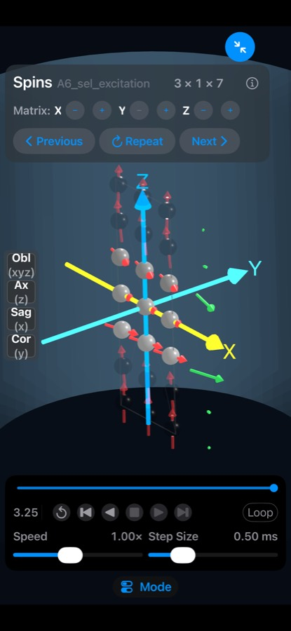
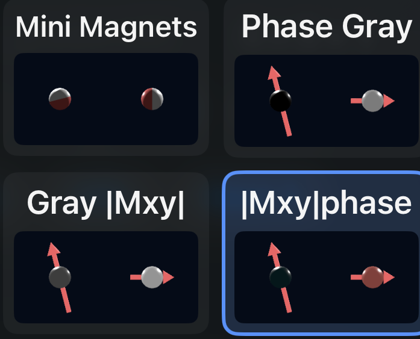

Spintuition
Spintuition Vector Array (Spins Panel)
Vector Array (Spins Panel)
The Spins panel visualizes the magnetization of a three-dimensional lattice of spins during MRI pulse sequences.
Each spin represents a group of protons treated as one magnetic dipole, drawn as an arrow through a sphere. The matrix is simulated with the Bloch equations, including T1 and T2 relaxation and off-resonance.
Use the expand button (↗, top right) to view the spins full screen with additional controls.
Navigation
- Drag to orbit the camera around the matrix.
- Pinch to zoom in and out.
- View buttons (left side) snap to Oblique, Axial, Sagittal and Coronal views. Optional zoom and rotate animations can be enabled in Settings.
- Expand / collapse (top right) toggles the full-screen spins view.

Coordinate system
| Axis | Color | Direction |
|---|---|---|
| X | Yellow | Left–right |
| Y | Cyan | Anterior–posterior |
| Z | Blue | Superior–inferior, along the main field B0 |
The largest matrix dimension spans the full 25 cm field of view; smaller dimensions keep the same spin spacing.
Matrix size
Use the X, Y and Z steppers to add or remove spins (X × Y × Z). Sequences can set the matrix with
the SimmrMatrixSize directive.
Spin options menu (•••)
The ••• button at the top right of the Spins panel opens the spin options:
| Option | Description |
|---|---|
| Spin Vector Help | Shows instructions for the Spins view. |
| Lab Frame | Off: rotating frame (default). On: laboratory frame, where spins also precess at the carrier frequency. |
| Show B1 | Shows an orange RF rotation-axis vector while RF is on, normalized to the peak RF amplitude. |
| Labels | Shows text labels on the spins. Only appears when the scan subject has labels. |
| Show Trail… | Draws a trail of each magnetization arrow tip over the last 0–2 ms (off by default). |
| Fade Unexcited… * | Fades spins with little transverse signal (0–25%), so excited spins stand out. |
| Spin Rendering… | Chooses how spins are drawn, and their size — see below. |
| Add Object | Creates a new, named custom array object. |
| Select Spin | Tap a spin in a custom object to edit its position, T1, T2, diffusivity, label and label offset (Δx/Δy/Δz), static Δf and spin size, or to duplicate or delete it. Objects can also be defined in a sequence file — see Custom scan object. |
* Only available in Advanced mode (toggle Advanced in Settings).
Vector averages: the average vector controls show the global XYZ average vector, or averages along X, Y or Z rows. Optionally average the transverse component only.
Spin rendering
Choose Spin Rendering… in the ••• menu. The first three options show spin direction; the last three show magnitude:
- Plain — uniform gray spheres for minimal visual complexity.
- Mini Magnets — white/red hemispheres like small bar magnets; white faces the magnetization direction.
- Phase Gray (default) — grayscale by XY phase angle, from black (−180°) to white (+180°).
- Gray |M| — grayscale by the magnitude of the magnetization, to show T1 contrast.
- Gray |Mxy| — grayscale by the transverse (signal) magnitude, to show T2 contrast.
- |Mxy|phase — color by XY phase, with brightness set by the transverse magnitude.
Below the options, Sphere Size sets the sphere diameter from 0 to 70% (default 40%); set it to 0 to see vector length clearly. Proportional to |m| scales each sphere with its magnetization magnitude.

Video export
Export Video records the simulation through the full waveform duration at 30 fps, capturing the spins and waveforms as a QuickTime movie you can save or share.